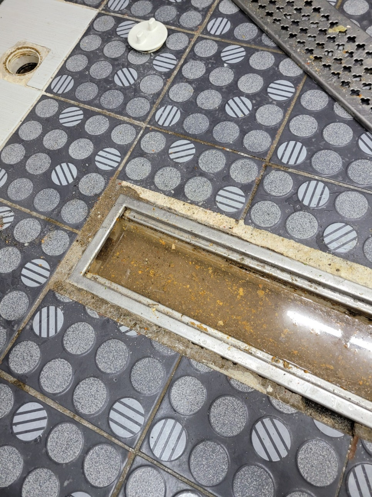
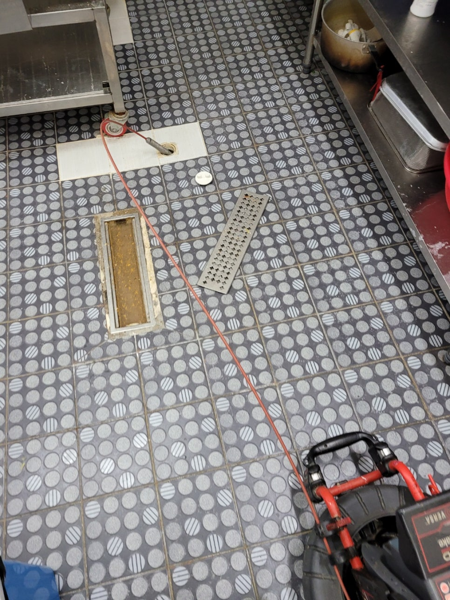
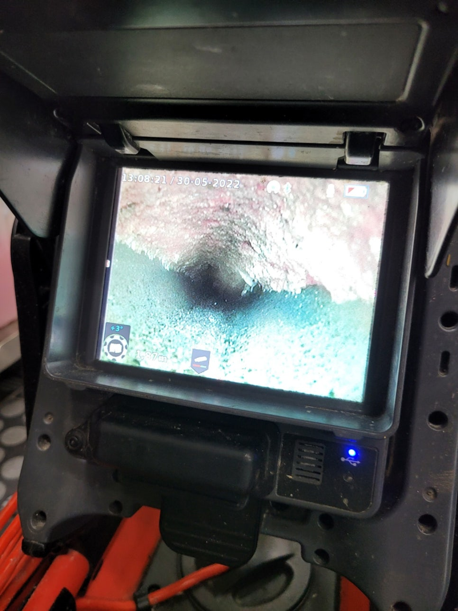
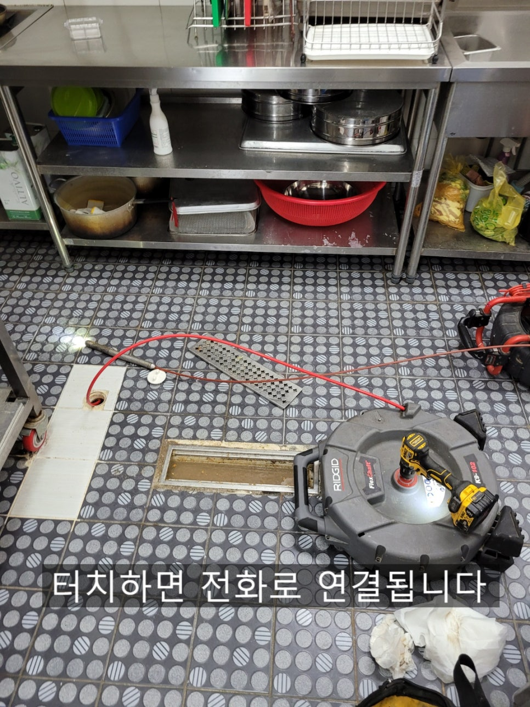
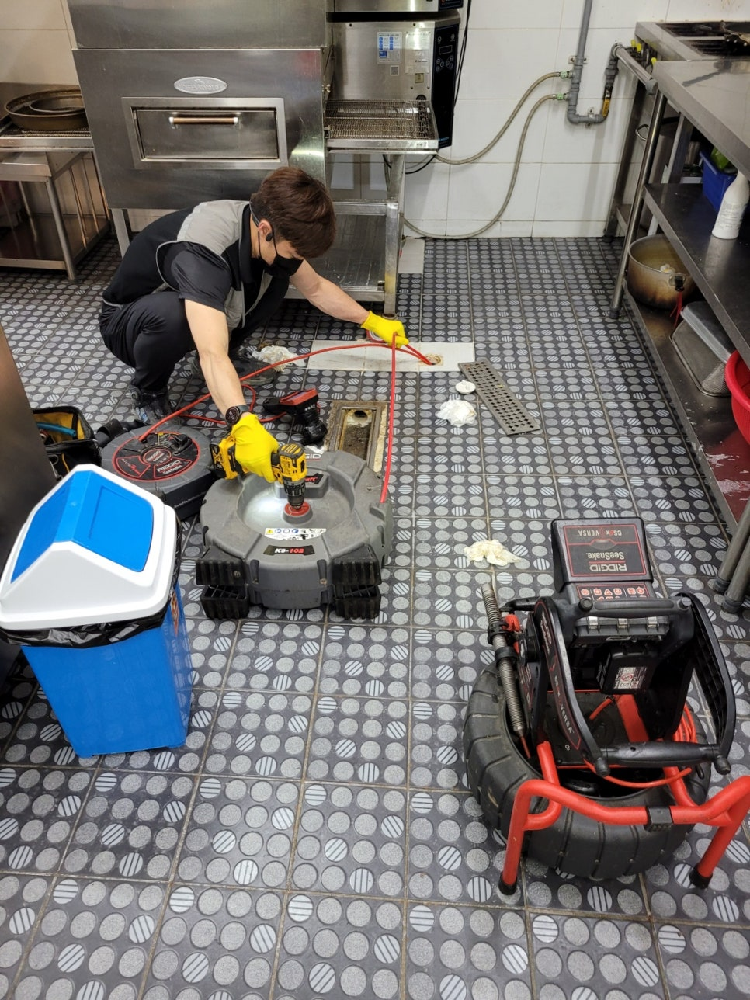
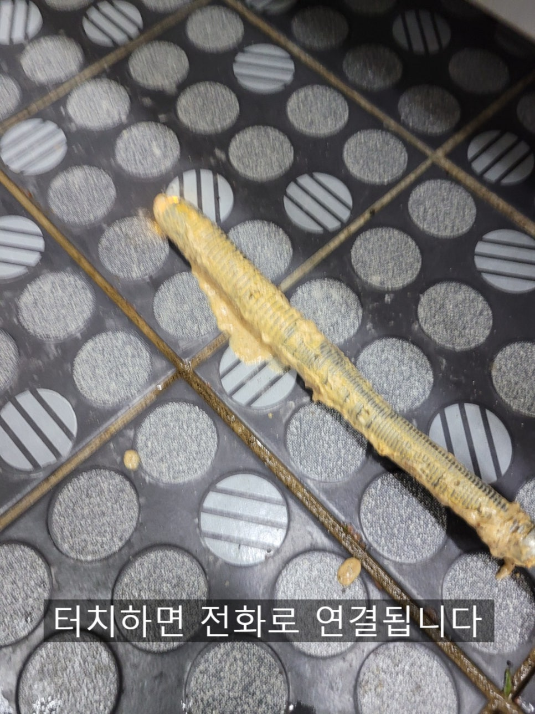
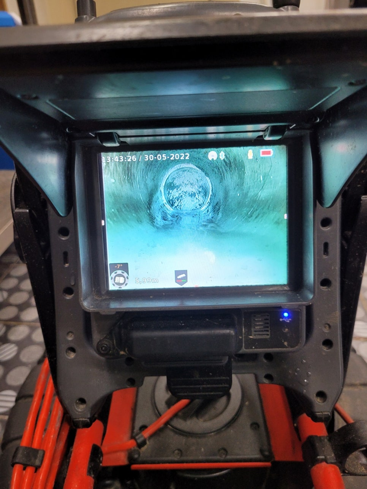

🏠 화성 향남 상가하수구막힘 깨끗하게 배관청소
화성 향남 싱크대막힘 전문 시공 후기

📋 작업 개요
- 위치: 화성 향남, 향남, 화성
- 서비스 유형: 싱크대막힘, 하수구막힘, 배관막힘, 뚫는업체, 배관청소, 고압세척
- 작업 일시: 2022. 6. 2. 21:49
- 업체명: 하수구수사대 (010-5615-2118)
🔍 문제 상황
화성 향남 상가하수구막힘 깨끗하게 배관청소
안녕하세요
하수구수사대 입니다.
오늘을 화성 향남에 위치한 피자집 매장인데요
싱크대에서 물을 쓰면 바닥배관에서 물이
올라왔다가 천천히 내려가는 증상으로
연락을 주셨습니다.
사진에 보이는것처럼 물이 넘치기 직전인데요
사장님께서는 전에도 여러번 업체를 불러서 스프링으로
뚫는 작업을 해보았지만 얼마가지 못하고 또 막힘증상이
나타 났다고 하셨어요.
일전에 오셨던 업체에서는 주방을 깨고 바닥에 점검구를
만들기도 하셨는데 상황은 마찬가지 였습니다.
배관이 작은걸 써서 자주 막힐거라는 말씀을 하셨다는데

🔎 원인 분석
💡 전문가 진단: 하수구수사대최첨단장비 다량보유!철저한 AS보증!수도권 전지역방문가능!O1O-234O-2118
주방에서는 싱크대하나만 사용하기때문에 50mm 배관으로도
충분히 사용할수 있는 구조였어요.
아무래도 내시경카메라로 배관을 보고 판단하는것과 못보고 판단하는것의
차이는 많을수 밖에 없어요. 내시경카메라로 확인을 해보는것이 정확하답니다.
배관윗부분에 기름들이 붙어있는것이 보이는데요
이러한 기름덩어리들이 일부분 떨어져 먼곳에서 나가지 못하고
정체되면 막힘 증상이 나타나게 되어있어요.
스프링은 배관 밑부분으로 지나가기 때문에 윗부분에
붙어있는 기름덩어리를 제거할수 없답니다.
배관청소 방법은 몇가지가 있겠지만 50mm배관에
적합한 플렉스샤프트를 사용하여 기름제거를
해주었답니다.
고압세척 방식도 있지만 배관크기가 작고 배관길이가
길지 않기 때문에 적합한 장비는 아니에요.

🔧 작업 과정
배관크기나 길이 그리고 막혀있는 이물질에 무엇이냐에
따라 상황에 따라 작업방식과 장비가 달라진답니다.
보통 고압세척의 경우는 배관이 크거나 길고 모래, 흙 또는
딱딱한 기름슬러지 ,죽슬러지 같은 경우 사용을 한답니다.
배관에 기름슬러지가 쌓이면 하수구에서도 심한
악취가 나기마련인데요 특히 아침에 출근할때 악취가
많이 나는 경우가 많답니다.
배관도 꾸준한관리를 해야 막힘증상과 악취를
예방할수 있으니 참고해주세요
배관내부쪽에서 묻어나온 기름슬러지인데요
죽처럼 끈적끈적한게 악취또한 정말 심해요.
이러한것들이 배관안에 자리잡고 있다보니
막히는 증상이 반복적으로 나타날수 밖에 없답니다.
배관청소를 하고 난뒤 내시경카메라로 배관구조와 길이를
체크하는데요 이렇게 구조와 길이를 알게 되면 추후
관리가 더 편하답니다. 주기적으로 펑크린을 부어주고
기름성분은 휴지로 닦아내는것이 좋아요.
물일 잘흘러나가는 것까지 확인을 하고
작업을 마무리 했는데요
고객님께서도 눈으로 보니 속이다 시원하다고
하셨답니다^^
하수구수사대는 수도권전지역 어디든
방문가능하니 자주막히는하수구, 타업체에서 못뚫는하수구


✅ 작업 완료
모두 해결해드리니 언제든지 연락주세요
하수구수사대
최첨단장비 다량보유!
철저한 AS보증!
수도권 전지역방문가능!
O1O-234O-2118




⚠️ 주방 싱크대 배관 막힘 예방 수칙
- ✅ 기름기가 묻은 식기나 프라이팬은 설거지 전 키친타올로 반드시 기름때를 닦아내세요.
- ✅ 주기적으로 싱크대 개수대에 뜨거운 물을 가득 받아 한 번에 내려 배관 내부 기름을 씻어내세요.
- ✅ 배수구 거름망을 미세한 필터로 사용하시고 음식물 찌꺼기가 틈으로 새어 들지 않게 관리하세요.
- ✅ 베이킹소다와 식초를 뜨거운 물과 함께 일주일에 한 번씩 부어주면 배관 살균과 막힘 예방에 좋습니다.
💡 핵심 정리
- 확실한 장비 작업(내시경 점검 및 샤프트 스케일링)으로 원인을 뿌리 뽑습니다.
- 작업 후 1년 이내에 동일한 부위 재발 시 100% 무상 A/S 서비스를 보장합니다.
- 서울 · 경기 · 인천 전 지역에 24시간 언제든 긴급 출동할 수 있도록 항시 대기 중입니다.
❓ 자주 묻는 질문 (FAQ)
🚨 화성 향남 싱크대막힘 문제로 고민이신가요?
정확한 원인 진단과 확실한 시공으로 재발 없는 해결을 약속드립니다.
24시간 긴급 출동 | 서울 · 경기 · 인천 전지역 | 1년 내 재발 시 무상 A/S